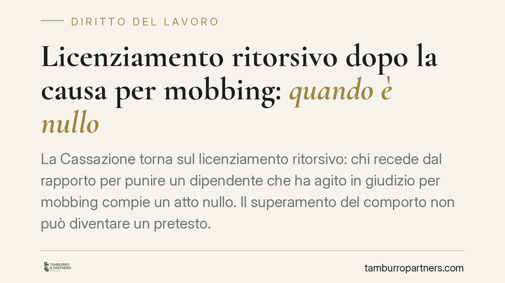
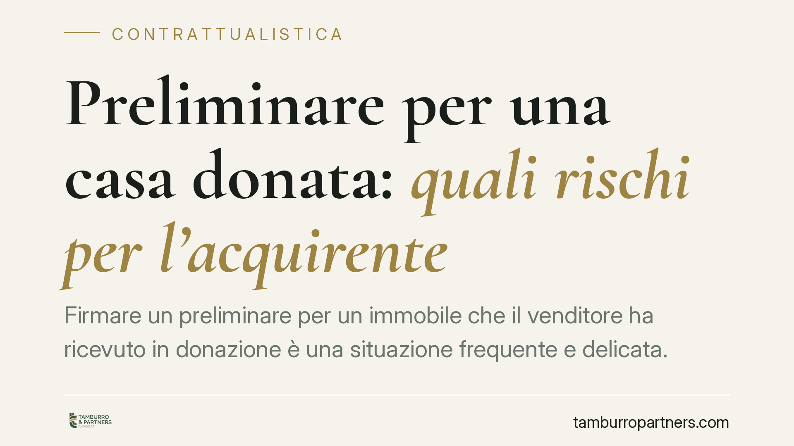
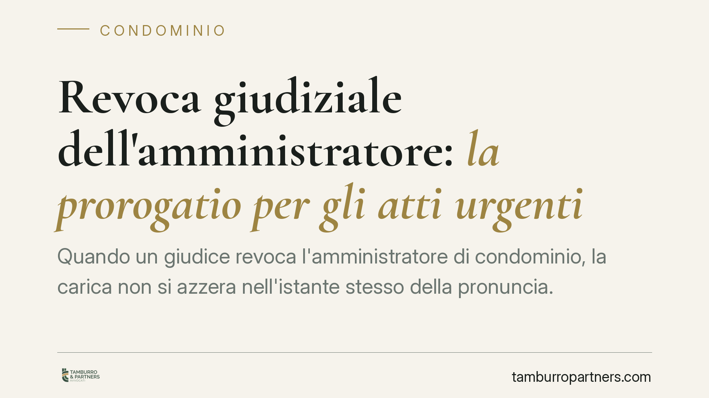

NASpI e lavoro intermittente: come si calcola il contributo
Per i lavoratori intermittenti il calcolo della NASpI presenta insidie specifiche, legate all'alternanza tra periodi di lavoro effettivo e fasi di inattività. La distinzione tra re…

Opzione Donna e Quota 103 nel 2026: requisiti e cautele
In vista della pensione, chi valuta Opzione Donna o Quota 103 per il 2026 deve muoversi con dati aggiornati. Le due misure restano canali di uscita anticipata, ma con requisiti str…

Debiti condominiali e legatario: obbligo di contribuzione e regresso
Chi riceve per testamento un appartamento eredita anche i debiti verso il condominio? Il tema tocca legatari, eredi e amministratori. La regola di fondo è chiara: si risponde in qu…

Comporto e lavoratori disabili: la Cassazione impone accomodamenti personalizzati
La Corte di Cassazione ha stabilito che applicare al lavoratore disabile lo stesso periodo di comporto previsto per tutti gli altri dipendenti può configurare una discriminazione i…

Distacco dal condominio: quando le spese comuni restano dovute
Distaccarsi da un servizio comune non significa uscire dal condominio. Chi separa la propria unità dall'impianto centralizzato resta obbligato a contribuire alle spese sui beni com…

Fondo di Garanzia INPS e TFR: si può ottenere senza fallimento del datore
Il Fondo di Garanzia INPS interviene sul TFR non pagato non solo in caso di fallimento del datore, ma anche quando l'impresa è insolvente e non assoggettabile a procedure concorsua…

Elenco morosi in condominio: cosa fare se l'amministratore lo nega
Chi vanta un credito verso il condominio deve prima escutere i condomini morosi. Ma senza il loro elenco l'azione è paralizzata. L'art. 63 disp. att. c.c. impone all'amministratore…

Tredicesima non pagata: entro quando si può fare causa
La tredicesima è retribuzione a tutti gli effetti. Se il datore non la corrisponde, il lavoratore ha diritto a chiederla in giudizio, ma entro un termine preciso. Il nodo non è sol…

Assemblea condominiale in terza convocazione: è legittima?
La legge condominiale prevede solo due convocazioni dell'assemblea: prima e seconda. Quando anche la seconda va deserta o non raggiunge i quorum, l'amministratore non ha il potere …

Impugnare una donazione: azioni, presupposti e termini
Una donazione può essere contestata, ma non con un'unica azione. Il diritto distingue tre rimedi — riduzione, revocatoria e nullità — ciascuno con presupposti, soggetti legittimati…

Smart working e caregiver: la priorità per chi assiste familiari con disabilità
Chi assiste un familiare con disabilità grave può ambire al lavoro agile in via prioritaria. La fonte non è la Legge 104, spesso citata a sproposito, ma la disciplina sullo smart w…

Amministratore di condominio: la revoca dopo la scadenza del biennio
L'amministratore che resta in carica oltre la scadenza del mandato pone un problema pratico ricorrente: si può ancora chiederne la revoca giudiziale per gravi irregolarità? La ques…

Panni stesi in condominio: uso lecito o abuso del diritto?
Stendere il bucato su corde fissate ai muri comuni sembra gesto banale. Diventa questione giuridica quando i panni invadono lo spazio aereo di proprietà altrui o pregiudicano il de…

Prescrizione delle spese condominiali: la lettera dell'amministratore non basta
Il Tribunale di Roma ha stabilito che l'amministratore non può interrompere da solo la prescrizione dei debiti condominiali. Nemmeno una lettera che riconosce l'importo dovuto vale…

Contabilità senza commercialista: quando scatta il reato di abusivo esercizio
La Cassazione torna sul tema dell'esercizio abusivo della professione. Tenere la contabilità e redigere dichiarazioni fiscali senza essere iscritti all'albo dei commercialisti inte…

Proposta di saldo e stralcio: come si redige, clausole e negoziazione assistita
Il saldo e stralcio è la strada per chiudere un debito pagando meno del dovuto, con l'accordo del creditore. Ma una proposta mal scritta può lasciare aperto il credito residuo o es…
Responsabilità precontrattuale: quando la trattativa fa nascere l'obbligo di risarcire
La libertà di negoziare non è illimitata. Chi conduce una trattativa e poi la abbandona in modo sleale, o tace circostanze rilevanti, può essere chiamato a risarcire il danno. Una …

Licenziamento ritorsivo dopo la causa per mobbing: quando è nullo
La Corte di Cassazione ha dichiarato nullo il licenziamento intimato per ritorsione al dipendente che aveva avviato una causa per mobbing. Il recesso fondato su un motivo illecito …

Preliminare per una casa donata: quali rischi per l'acquirente
Firmare un preliminare per un immobile che il venditore ha ricevuto in donazione è una situazione frequente e delicata. Il nodo riguarda i diritti degli eredi legittimari, che in c…

Revoca giudiziale dell'amministratore: la prorogatio per gli atti urgenti
Quando un giudice revoca l'amministratore di condominio, la carica non si azzera nell'istante stesso della pronuncia. Per evitare vuoti gestionali, l'amministratore uscente conserv…

Ripetizione dell'indebito: quando puoi chiedere indietro un pagamento non dovuto
Chi paga una somma che non doveva ha diritto a riaverla indietro. È il principio della ripetizione dell'indebito, disciplinato dagli articoli 2033 e seguenti del codice civile. Dis…

Superbonus e rendita catastale: gli obblighi di verifica dell'agente immobiliare
Gli interventi agevolati con Superbonus possono incidere sulla rendita catastale dell'immobile. Prima di una compravendita, l'agente immobiliare deve accertarsi che i dati catastal…

Patteggiamento penale e licenziamento disciplinare: quando il datore può recedere
La Corte di Cassazione, Sezione Lavoro, torna sul rapporto tra processo penale e sanzioni disciplinari. Il patteggiamento è prova qualificata dei fatti, utilizzabile dal datore per…

Prevenzione incendi in bar e discoteche: obblighi e responsabilità del gestore
I chiarimenti ministeriali sulla prevenzione incendi nei locali di pubblico spettacolo tornano a distinguere tra discoteche, sempre soggette a controllo dei Vigili del Fuoco, e bar…

Un estraneo può partecipare all'assemblea condominiale?
L'assemblea condominiale è la sede in cui i condomini decidono sulla gestione dell'edificio. Ma non sempre chi siede al tavolo è un proprietario. Delegati, usufruttuari e inquilini…

Infiltrazioni dal terrazzo a uso misto: come si dividono le spese
Un terrazzo può essere insieme copertura dell'edificio e superficie a uso esclusivo di un condòmino. Quando da lì partono infiltrazioni verso gli appartamenti sottostanti, la doman…

Rumori molesti dei vicini: come può difendersi l'inquilino
L'inquilino esposto ai rumori dei vicini non è privo di tutele, ma deve muoversi su piani distinti: civile, amministrativo e penale. Ciascuno ha presupposti e prove diverse. Compre…

Riduzione del cuneo fiscale 2025: come si calcola il beneficio in busta paga
Dal 2025 cambia il meccanismo di sostegno al reddito da lavoro dipendente: al posto dell'esonero contributivo subentrano una somma integrativa esente e una nuova detrazione. La cir…

Visita fiscale in malattia: orari, reperibilità e conseguenze per il lavoratore
Il lavoratore in malattia deve restare reperibile per il controllo medico INPS in fasce orarie precise. L'assenza ingiustificata comporta sanzioni economiche pesanti e, nei casi pi…

Clausola penale eccessiva: il giudice può ridurla d'ufficio
Una clausola penale può essere ridotta dal giudice quando l'importo pattuito è manifestamente eccessivo. Lo ribadisce il Tribunale di Ancona con una pronuncia del 2026, che applica…